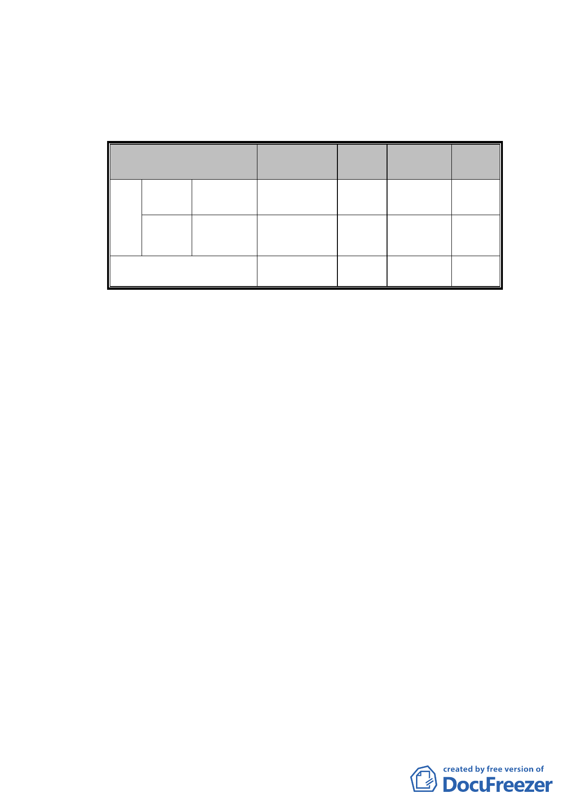

四、 土地及建築物權屬：
（一） 土地權屬：皆屬公有土地。詳下表統計：
土地權屬/管理單位
臺北市
公有
臺北市北
投區公所
土地 新北市
新北市政
府財政局
土地面積
(㎡)
比例
所有權人
數
比例
2,568.91 75.85% 1
50.00%
817.81 24.15% 1
50.00%
合計
3,386.72 100.00% 2 100.00%
（二） 建物權屬：本更新地區內無合法建築物。
五、 居民意願：
（一） 更新地區範圍內所有權人參與意願：
1. 更新地區內皆為公有土地、建物，依都市更新條例
第 27 條規定，應一律參與都市更新。新北市政府財
政局以 101 年 9 月 14 日函同意本案招商範圍及開發
方式以設定地上權方式參與。
2. 現住戶係屬市有眷舍住戶者，依臺北市市有不動產
參與都市更新處理原則第 13 點規定程序辦理。
（二）相鄰土地所有權人參與意願：
市府財政局於 101 年 8 月 28 日召開「臺北市北投區新
民段二小段 472 地號市有土地及毗鄰土地」劃定更新
地區說明會，就市有土地相鄰之私有土地進行意願調
查及說明未來實施方式，參與更新意願詳下表：
- 14 -